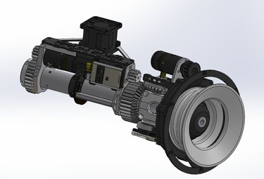
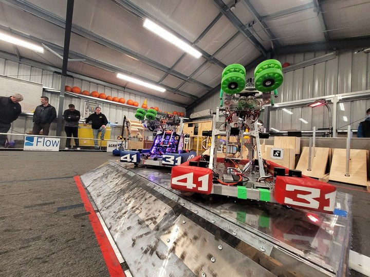
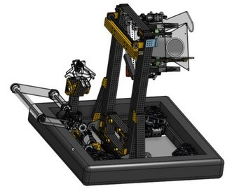
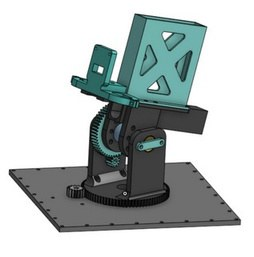
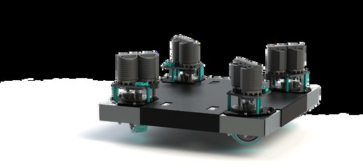
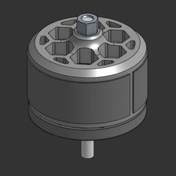
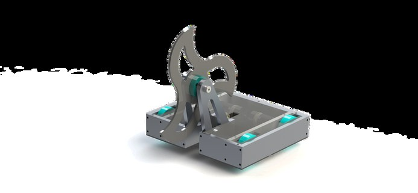

Casey Frantz
Mechanical engineering student at the University of Washington.
Most of what I do is design, machine, and assemble robots and the mechanisms inside them. A few of the projects I've worked on are below. Also check out visual portfolio (PDF)
ARC Robotics Competition

With five other students, I helped design and build a 20 lb robot, roughly 0.6 by 0.6 m, for a competition that came down to picking up cubes and placing them precisely. My main piece was the two-degree-of-freedom wrist. It rolls continuously through 360 degrees on a slip ring and pitches 180 degrees, which gives the end effector a full hemisphere to work in. I iterated the gear train to cut backlash and stiffen it, added on-axis encoding for control, and built in hardstops and active cooling so it could survive a stalled motor during testing.
I drew the parts to GD&T, cut them on the waterjet, milled and tapped them against a fixture plate, pressed in the bearings on the lathe and mill, and assembled the wrist myself. The electronics mount was topology-optimized in nTop. The wider robot used slip rings on the turret yaw and wrist roll for continuous rotation, three passive omni-wheels for odometry, and a suction end effector.
FIRST Robotics Competition, Mechanical Lead

I led manufacturing for our team's two robots that season. Each had a swerve drive base, a telescoping arm, and an intake that could grab both cubes and cones. The design subteams handed off the CAD and I took it to the machines, making every aluminum, polycarbonate, and 3D printed part by manual mill, lathe, or CNC router. Both robots held up through high-contact matches and carried us to the world championship, where we finished in the top 40 of about 3,000 teams and picked up engineering awards. I also drove one of them.
FIRST Robotics Competition, Design Mentor

I mentored a high school team through the design of their intake and climb. Most of the students were new to CAD, so we started with fundamentals and worked up to tolerance planning and prototyping. The robot ran a dual-stage cascading elevator, a multi-object intake, and an endgame climb. We reworked the slap-down intake until it actuated smoothly and handled game pieces reliably. The team finished among the top five scorers at the Pacific Northwest regionals.
Two-Axis Nerf Turret

At a 24-hour hackathon my team built a two-axis Nerf turret that rotates a full 360 degrees, feeds from a gravity magazine, and turns on a custom thrust bearing. An Arduino and a Raspberry Pi drove the motors and servos. I went through several indexer designs for the servo rotation to tighten up rigidity and tolerances as we assembled. We took second out of 40 teams, with our highest marks for complexity and completeness.
Swerve Drive Module

On my own I modeled a full swerve drive module, based on West Coast Products' Swerve X, that could actually be built. It came to 43 unique parts with zero interferences and correct motion through every degree of freedom. I used SolidWorks surfacing, sheet metal, and weldments, checked the part interfaces and clearances for real fabrication, and put together an exploded animation to show how it moves and goes together.
Flashlight Body Optimization

The goal was a flashlight body that stayed stiff in a three-point bend test while staying light. I ran FEA design studies in SolidWorks Simulation across different cross-sections and wall thicknesses, then added material where the stress concentrated and took it out everywhere else. Our design finished with the third-lowest deflection-to-weight ratio in the class.
3D Printed BLDC Motor

A brushless motor with a mostly 3D printed structure. A plastic stator leaks a lot of magnetic flux, so I added a steel ring to close the path. Right now I'm balancing turn count against slot fill to land around 150 Kv at 24 V.
Beetleweight Battlebot

Over about two months I did most of the CAD for a 3 lb battlebot, including the drivetrain and weapon. We sketched the concept in Onshape, moved it into SolidWorks, and went through three iterations of the drive base and weapon before settling on a design. The bot worked, but the motors and electronics ended up interfering with each other and the motor mount was too fragile. It taught me more than most of the builds that held together.